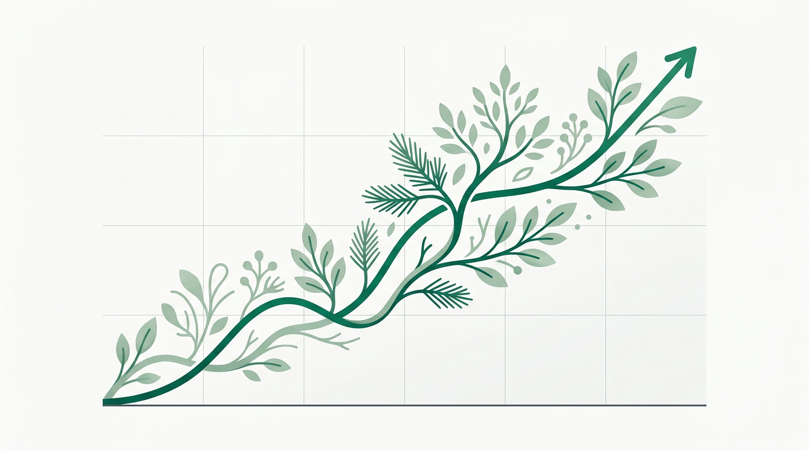
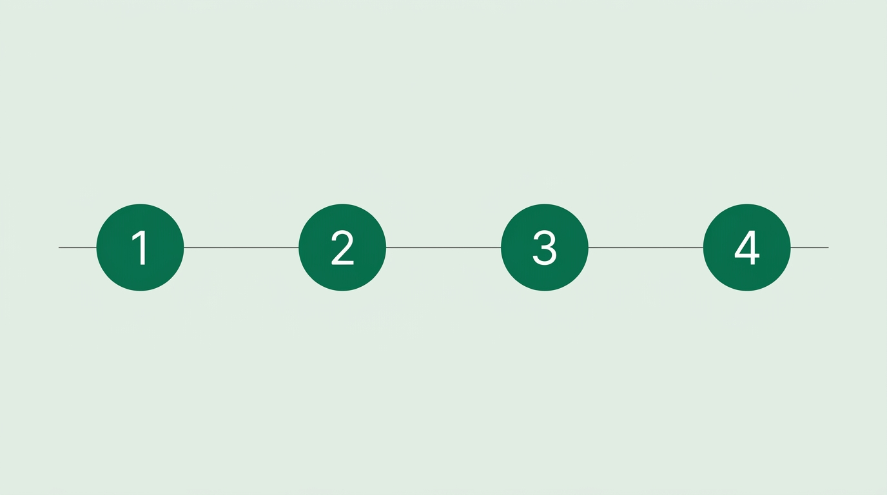

Growth you can measure, strategies you can understand
SEO does not have to be a black box. We take the confusion out of search engine optimization by providing a crystal-clear roadmap. We focus on tangible business growth, ensuring every technical fix and content strategy translates directly to more traffic, better leads, and increased revenue.
-

No more guesswork
You will never have to wonder what your marketing budget is paying for. From day one, you receive concrete deliverables, including comprehensive audit reports, keyword mapping spreadsheets, and detailed content calendars.
-

Sustainable, long-term visibility
We do not rely on temporary tricks. We build a rock-solid technical foundation and leverage high-quality content strategies to ensure your website climbs the rankings and stays there, protecting your business from unpredictable algorithm updates.
-
Outrank the industry giants
By leveraging advanced digital PR, strategic backlink campaigns, and technical coding that search engines love, we build your brand’s authority. We position your business as the undeniable leader in your specific market.
Why choose us
Not all SEO agencies are created equal. Many promise big results but rely on shortcuts that don’t last. Here’s how we’re different:
What most SEO agencies do
- Fake engagement tactics. Using bots or paid clicks to simulate user behavior, which doesn’t build real rankings and is easily flagged by Google.
- Spammy links. Submitting your site to irrelevant directories or buying cheap, low-quality backlinks that hurt more than they help.
- Content flooding. Churning out thin, generic articles with no strategy or intent behind them.
- Vanity metrics. Reporting on meaningless numbers like impressions or domain authority without real keyword movement or lead generation.
- Cookie-cutter plans. Applying the same strategy to every business, regardless of niche, competition, or goals.
What we do instead
- Strategy first, always. We focus on comprehensive keyword clustering and intent-driven content. Page mapping ensures every action ties back to rankings and real leads.
- Build real, lasting authority. We secure relevant, high-quality backlinks that Google trusts. Our content is designed to rank, and we establish topical authority with structured internal linking.
- Controlled, sustainable growth. We prioritize focused content production and strategic page expansion, scaling your site to align with your goals. We avoid spam and emphasize consistency and quality.
- The complete SEO approach. We combine technical SEO, content strategy, and authority building to create ranking success. Most agencies only focus on one or two of these, but we ensure all three are aligned for maximum impact.
- Transparent execution. You’ll always know what’s being done, why it matters, and how it’s driving results. We focus on real progress, not shortcuts or empty promises.
Our philosophy: build assets, not shortcuts
SEO isn’t about gaming the system. It’s about creating a website that deserves to rank and making sure Google sees it that way. If you’re tired of gimmicks and want real, sustainable growth, we’re here to help.
Your customized 12-month growth roadmap
We break our proven SEO methodology down into clear, actionable phases so you know exactly what to expect as your traffic grows.

-
Phase 1 Month 1: The technical foundation
Before we build, we fix. We conduct a massive technical audit of your website to find broken links, missing metadata, and indexing errors. We also perform deep keyword research to map out exactly what your ideal customers are searching for. You receive a fully optimized website and a comprehensive content plan designed to capture high-intent traffic.
-
Phase 2 Months 2 to 3: Building and expanding your footprint
With a healthy website in place, we begin creating content to cover entire topic clusters, helping your site rank for relevant, high-value searches. At the same time, we start spreading your brand’s name across the web by submitting your business to trusted directories and ensuring your information is consistent everywhere. We also use “Parasite SEO,” publishing your content on highly trusted platforms like Medium or Substack, to help you rank for competitive keywords quickly.
-
Phase 3 Months 4 to 6: Accelerating authority
Search engines rank websites they trust. In this phase, we build that trust by securing high-quality backlinks from other reputable websites in your industry. We pitch guest posts, repurpose your blog content, and create engaging assets like infographics to encourage other sites to link back to you, signaling to Google that your business is a credible authority.
-
Phase 4 Months 6 to 12: Scaling and domination
With your foundation and authority established, we scale up efforts to dominate search results. We expand content production further to cover even more topic clusters, ensuring your website becomes the go-to resource in your industry. We also implement advanced tactics like “Entity SEO” and “Schema Stacking” to optimize your website’s structure and content, making it easy for search engines to understand your brand and rank it as the top answer for searchers.
Frequently asked questions
How long does it take to see results from this program?
SEO is a long-term investment. While we often secure quick wins by fixing technical errors in Month 1, significant jumps in traffic and lead generation typically begin between months four and six as our link-building and content distribution efforts take effect. The 12-month timeline ensures we capture maximum market share.
Will I be kept in the loop on what you are doing?
Absolutely. Transparency is a core part of our program. You will receive tangible deliverables right away, including an Excel audit report and a comprehensive keyword map. We provide regular updates so you can see exactly how our strategies are impacting your search visibility.
What do advanced terms like “Entity SEO” and “Schema Stacking” actually mean for my business?
Search engines are essentially highly advanced filing systems. “Schema Stacking” is a way of adding invisible code to your website that speaks directly to search engines in their native language, telling them exactly what your page is about. “Entity SEO” is how we help search engines connect the dots about your brand, ensuring they view your business as a recognized, trusted entity rather than just a random website. Both strategies simply help you show up more often when customers are ready to buy.
Why do you publish my content on other websites instead of just mine?
When we publish content on massive, established platforms (a strategy sometimes called Parasite SEO), we are borrowing their high trust scores to get your brand seen immediately. It is an incredibly effective way to capture real estate on the first page of search results while we work in the background to build the authority of your own website.

Stop hiding on page two of the search results
Partner with us to build a website that works tirelessly to bring you new customers every single day.